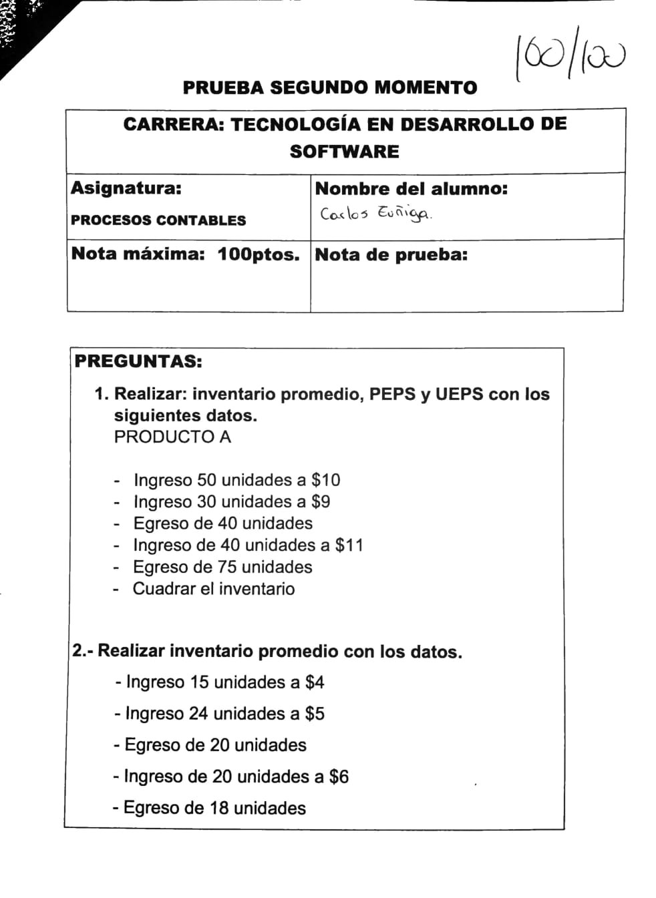

PRIMER MOMENTO
Costo de horas extra del 50% y 100%
El trabajo realizado fuera de la jornada laboral se conoce como horas extras mismas que se calculan y pagan de acuerdo al ART.55 del código de trabajo mismo que presenta lo siguiente:
Horas trabajadas luego de la jornada (diurna o nocturna) de trabajo hasta las 24:00 se pagan con el 50% de recargo.
Horas trabajadas en sábado domingo o feriado se pagan con el 100% de recargo. 24:01 a 6 horas siguientes.
Beneficios sociales
El decimotercer sueldo, también conocido como el bono navideño, representa un ingreso extra para los trabajadores en diciembre. Según el artículo 111 del Código de Trabajo, todos los empleadores tienen hasta el 24 de diciembre del 2022 para cumplir con este pago.
El decimocuarto sueldo o bono escolar es un beneficio y lo deben percibir todos los trabajadores bajo relación de dependencia, indistintamente de su cargo o remuneración. Y consiste en un sueldo unificado vigente a la fecha de pago, es decir USD 450 en el 2023.
El fondo de reserva es un beneficio que tiene el empleado que es afiliado al Seguro Social y que ha prestado su servicio por más de un año al mismo empleador. Este corresponde al 8,33% de la remuneración de aportación.
El pago de las vacaciones se hace de forma general y única. Para ello se debe dividir entre 24 las remuneraciones de todo el año, con horas suplementarias, extraordinarias u otra retribución accesoria. No se debe tomar en cuenta las décimas remuneraciones.
Rol de pagos
El rol de pagos o nómina, es el registro que realiza toda empresa para llevar el control de los pagos y descuentos que debe realizar a sus empleados cada mes, de manera general, en este documento se consideran dos secciones, una para registrar los ingresos como sueldos, horas extras, comisiones, bonos, etc. y otra para registrar los descuentos como aportes para el seguro social, cuotas por préstamos concedidos por la compañía, anticipos, etc.
Prueba primer momento
SEGUNDO MOMENTO
Inventario promedio
El inventario promedio es un cálculo que estima el valor o la cantidad de un activo en particular o un conjunto de activos durante dos o más períodos de tiempo específicos. El inventario promedio es el valor de inventario promedio durante un período de tiempo determinado, que puede variar del valor medio del mismo conjunto de datos, y se calcula promediando los valores de inventario inicial y final durante un período específico.
Inventario PEPS (FIFO)
El método de gestión de inventarios FIFO (First in, First out, en sus siglas en inglés) o PEPS (Primero en Entrar, Primero en Salir), es una herramienta muy utilizada en la gestión del almacén.
La definición y funcionamiento del método FIFO (o PEPS en español) en el almacenaje industrial tiene que ver con la forma en la que mueven las mercancías y es sencillo, primera en entrar (first in), primera en salir (first out). Es decir, la primera mercancía o unidad de carga en entrar en almacén, es la primera en salir de él.
Para ello se desarrollan sistemas de almacenaje industrial específicos que facilitan este tipo de proceso, tanto en términos operativos como de gestión.
Inventario LIFO (UEPS)
La gestión de stock para almacenes LIFO (Last in, First out, en inglés) o UEPS (Última en Entrar, Primera en Salir), es el método contrario al FIFO, por el cual la última unidad de carga en entrar al almacén será la primera en salir del mismo.
También conocido por sus siglas en español como UEPS (última en entrar, primera en salir), el método LIFO da prioridad de salida a los últimos lotes de producto que han entrado en almacén, mientras que las mercancías que han sido depositadas anteriormente en la estantería industrial quedarán almacenadas hasta que no tengan otra unidad de carga delante suyo.

Prueba segudo momento
TERCER MOMENTO
Análisis financiero
El análisis financiero es un proceso mediante el cual se examinan y evalúan los datos financieros de una empresa con el objetivo de comprender su desempeño financiero, su solidez y su capacidad para generar valor. El análisis financiero implica la interpretación de los estados financieros, como el balance general, el estado de resultados y el estado de flujo de efectivo, para obtener información clave sobre la situación financiera de la empresa.
Se utiliza ampliamente en la toma de decisiones empresariales, ya que proporciona información valiosa para los propietarios, inversionistas, prestamistas y otros interesados.
Análisis horizontal
El análisis horizontal, también conocido como análisis de tendencias, compara los datos financieros de una empresa a lo largo de varios períodos contables para identificar y evaluar los cambios y tendencias que han ocurrido. El objetivo principal del análisis horizontal es determinar la dirección y el grado de cambio en las cifras clave de los estados financieros, como los ingresos, los gastos, los activos y los pasivos.
Este análisis se realiza mediante la comparación de los valores absolutos o los porcentajes de cambio de una partida específica en diferentes periodos. Permite identificar las áreas de crecimiento o declive en los estados financieros y evaluar la consistencia y la evolución de los resultados financieros de la empresa a lo largo del tiempo.
Análisis vertical
El análisis vertical, también conocido como análisis de estructura o análisis de porcentajes, examina la composición y la proporción de las diferentes partidas en los estados financieros de una empresa en un solo período contable. El análisis vertical muestra la relación de cada partida individual con respecto a un total dentro del estado financiero.
En el análisis vertical, se expresan los valores de cada partida como un porcentaje del total correspondiente. Por ejemplo, en un estado de resultados, los ingresos de ventas se expresarían como un porcentaje de los ingresos totales, mientras que en un balance general, los activos y pasivos se expresarían como un porcentaje del total de activos o pasivos, respectivamente.